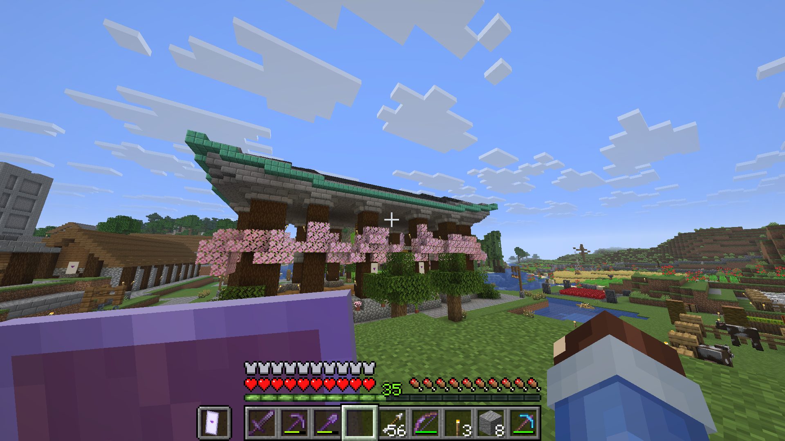
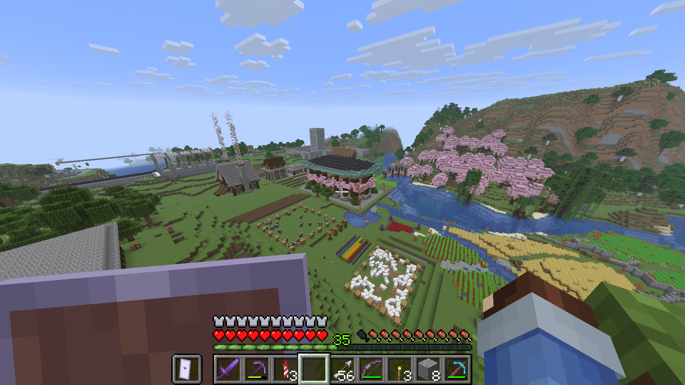

What is Minecraft?
Minecraft is a sandbox game developed and published by the Swedish company Mojang Studios. Following its initial public alpha release as an early access title in 2009, it was formally released in November 2011 for personal computers. The game has since been ported to numerous platforms, including mobile devices and various video game consoles. Minecraft is the best-selling video game in history with over 350 million copies sold. It has received critical acclaim, winning several awards and being cited as one of the greatest video games of all time. Social media, parodies, adaptations, merchandise, and the annual Minecon conventions have played prominent roles in popularizing it. The wider Minecraft franchise includes several spin-off games, such as Minecraft: Story Mode, Minecraft Dungeons, and Minecraft Legends.
Minecraft is a three-dimensional sandbox video game that has no required goals to accomplish, giving players a large amount of freedom in choosing how to play the game. The game features an optional achievement system. Gameplay is in the first-person perspective by default, but players have the option of third-person perspectives. The game world is composed of rough 3D objects—mainly cubes, referred to as blocks—representing various materials, such as dirt, stone, ores, logs, water, and lava. The core gameplay revolves around picking up and placing these objects. These blocks are arranged in a voxel grid, while players can move freely around the world. Players can break, or mine, blocks and then place them elsewhere, enabling them to build structures.
Why Do I Like Minecraft?
Minecraft has had the biggest impact on my life. With the other 3 games, I can only some what remember when I discovered them, or how I discovered them. However, with Minecraft I can remember how and when I discovered it. It was 2012, and I was at a friend's house. I was 5 or 6 years old at the time. My friend wanted to show a new game he found. He pulled out his phone, (probably his mom's phone) and opened Minecraft Pocket Edition. I was hypnotized. I can even remember what he specifically showed me on Minecraft. He had built a brick hut in the middle of lake, and the lake was filled with chickens. He pulled out a bow and arrow and started shooting. What captivated 5 year old me, I'll never know, but from then on, I knew it had to play it. I guess I beg and whined to my parents to get it for me.
A morning after that visit to my friend's house, my parents handed me our family iPad. On it, they had installed Minecraft. I could go on. Minecraft was a part of my childhood, Youtubers like Stampy, DanTDM, CaptainSparklez, LogDotZip, ExplodingTNT and many others. It also got me and my friends through COVID, we had a little server we could all log on and interact during isolation. Once again, I could go on, its music, its modding community, and many other aspects of Minecraft. At the end of the day, Minecraft will continue to have a part in the my life.
Minecraft Gameplay
Fun Fact! These are from my world!


Should You Play Minecraft?
Of course! Minecraft is a staple of gaming. You don't like the vanilla experience? Mod it! Wanna play with others? You can! Servers! And with tons of funny and great Youtubers and content creators on the internet. Its a great game everyone can enjoy!
Still unsure? Here's the trailer!